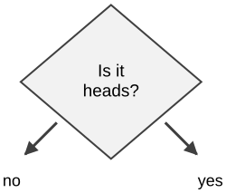
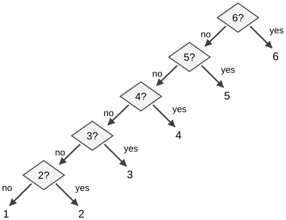
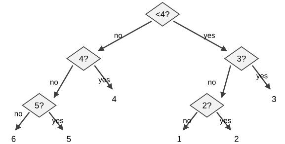
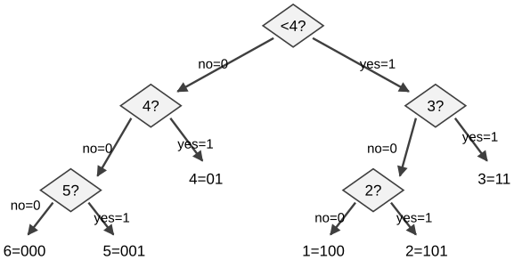
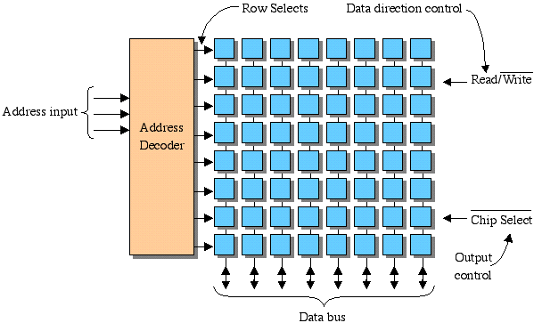
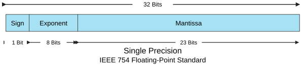
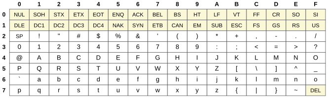
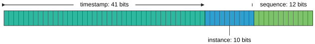

Introduction to Computing for the Social Sciences · lecture transcript
Recommended reading for this session: Chapter 1 of Evans, Introduction to Computing (2011), which is free at https://computingbook.org/. References at the end.
In 2016, three researchers downloaded the supplementary spreadsheets
of 3,597 published genetics papers and checked them (imagine the amount
of work without AI). In 704 of them (19.6%) gene names had been silently
changed. Human gene symbols include SEPT2 (Septin 2),
MARCH1, DEC1 and OCT4. A
spreadsheet opening a text file guesses what each cell means, decides
that SEPT2 is a date, and stores the 2nd of September of
the current year; re-exported, the cell now reads 2-Sep.
Identifiers like 2310009E13 are guessed to be scientific
notation and become 2.31E+13, losing their digits entirely.
Nothing failed and no warning appeared. The corruption is only visible
if you know what the value was supposed to be. The episode ended in a
way that is worth reflecting on: in 2020 the HUGO Gene Nomenclature
Committee, the body that names human genes, renamed 27 genes so that
spreadsheets would stop breaking them. MARCH1 became
MARCHF1 and SEPT1 became SEPTIN1.
Biologists had to change the way they name things because of a software
error.
The bug is not really about spreadsheets, it is about information
coding. Data is stored in bytes and the meaning of those bytes depends
on how they are interpreted. SEPT2 is five characters, and
whether those characters are a gene, a date or a chemical formula is not
specified in the file. Some program has to decide, and here a program
decided silently and wrongly. Everything in this session is about
understanding how that works rather than letting software guess and take
the risk. Section 3 asks what it means to store a value at all, and why
everything on a computer is ultimately a sequence of bits. Section 9 is
about characters specifically: S, E,
P, T and 2 are numbers before
they are letters, and which numbers depends on an encoding you can
choose. Section 10 is about types, the machinery that a programming
language gives you to say that a column is text and must not be
reinterpreted, which is exactly what the spreadsheet lacked. The general
lesson to take from the session is that when a value changes and nothing
warns you, the problem is almost always that two pieces of software
disagreed about what the bytes meant.
The Vancouver Stock Exchange launched a new index in January 1982 at a value of 1000.000, recomputed after every trade, some 3000 times a day. Over the next 22 months the index fell steadily, reaching 524.811, even though the shares it tracked had on the whole gone up. Analysts looked for an economic explanation and did not find one because there was none. Each recomputation kept three decimal places by truncating the fourth rather than rounding it. Truncation is not symmetric up and down, it always removes value towards zero and never adds value away from zero. A loss of at most 0.001 per calculation, repeated 3000 times a day for 22 months, is roughly 20 index points a month. When the index was recomputed correctly in November 1983 it jumped overnight from 524.811 to 1098.892.
Two things make this a good story for a social scientist rather than for a programmer. First, the error was invisible at every individual step. No single calculation was wrong by an amount anyone would notice, and the failure lives entirely in the accumulation. When data gets large, we add a million numbers, not just two. Second, the error was systematic and not random. Had the fourth decimal been rounded, the errors would have been roughly symmetric and would largely have canceled, while truncation made every error point downwards. This is precisely the distinction between noise, which averages out, and bias, which does not, and it is the reason why numerical mistakes in analysis code are dangerous in a different way to measurement error.
In computer science, information is the representation of knowledge. That sounds abstract until we make it operational, which is what Claude Shannon did in 1948. Information is encoded by recording changes in knowledge, and the simplest way to think about a change in knowledge is to ask how much we learn from the answer to a question. Take a coin. Before the flip we do not know the outcome, and after asking whether it landed heads we do. That single yes/no answer is the smallest possible amount of information, and we call it one bit. Coding information is done by asking questions, and the way in which we ask questions affects the properties and quality of the coding.

Each yes/no question gives us one bit of information, so we can ask how many bits we learn from the roll of a six-sided die. The answer depends on how we ask, that is, on how we encode the information. Suppose we ask the questions in the most straightforward order: is it 6, is it 5, is it 4, is it 3, is it 2, and if all answers are no, it must be 1. The figure shows this strategy as a tree.

Counting the questions per outcome, a 6 needs one question, a 5 needs two, a 4 needs three, a 3 needs four, and both 1 and 2 need five, because once we know that it is not 3 we still have to ask whether it is 2. The total over the six outcomes is \(1+2+3+4+5+5 = 20\), so on average we need \(20/6 \approx 3.33\) questions. We can do better by asking questions that split the remaining possibilities in half. Asking first whether the result is less than 4 splits the six outcomes into two groups of three, and two more questions resolve each group.

Counting again, two outcomes need two questions and four need three, so the total is \(2+2+3+3+3+3 = 16\) and the average is \(16/6 \approx 2.66\) questions. The general rule is that each yes/no question doubles the number of possibilities we can distinguish. With \(b\) questions we can tell apart \(2^b\) outcomes, so an outcome with \(2^b\) equally likely possibilities carries \(b\) bits of information, and eight equally likely outcomes carry exactly 3 bits.
Note that the above calculation is an average that assumes that all outcomes of a dice roll are equally likely. What happens when outcomes have different probabilities?
If we label every “no” branch of the tree with 0 and every “yes” branch with 1, each outcome gets a string of bits. Following the tree becomes a way of coding the outcomes of the dice roll:

\[6 \to 000,\quad 5 \to 001,\quad 4 \to 01,\quad 1 \to 100,\quad 2 \to 101,\quad 3 \to 11\]
This is a prefix code, i.e. no codeword is the beginning of
another codeword. That property is what makes the code decodable without
separators between the codewords. Reading 1101000100101
from the left, 11 can only be 3, then 01 is 4,
000 is 6, 100 is 1 and 101 is 2.
Nothing is ambiguous at any point, because as soon as we have read a
complete codeword we know that it is complete and we can start with the
next one.
This might remind you to the notion of entropy that you may have seen in a statistics course. Shannon’s entropy of a distribution is the minimum average number of yes/no questions needed to identify an outcome; a prefix code reaches that minimum exactly when all probabilities are powers of two, and otherwise the best prefix code comes within one question of it. Exercise 1 of the exercise sheet of this session asks you to build such a tree for a biased die, where the best code is no longer the balanced one.
The smallest physical unit of information is one bit, with no and yes stored as 0 and 1. In memory a bit is a capacitor that is charged or not, usually together with some transistors, and on a hard disk it is a small region magnetized in one direction or the other. The smallest logical unit is one byte, which is 8 bits. Processors normally address whole bytes, that is, they read and write information in chunks of 8 bits. You cannot ask a processor for bit number 37 directly; you ask for the byte that contains it and then extract the bit with the bitwise operations of section 10.

Bits in chips are stored as voltage levels, for example 0 volts for 0 and +5 volts for 1. A memory chip has three kinds of input: a select line that activates the chip, a read/write line that says which operation to perform (read or write), and an address line carrying several bits that select which row of the chip to access. An address decoder activates the addressed row, and the data bus either carries out the content of that row, in the case of a read, or carries in the new value, in the case of a write. That is enough detail for this course. We will come back to how a running program organizes its memory in session 6, when we look at the call stack.
In a positional number system the value of a digit depends on its position. In 12 the digit 1 means ten, while in 1200 the same digit means one thousand. Such a system needs a finite set of symbols, called the alphabet, a rule that assigns to position \(k\) (counting from 0 and from right to left) the weight \(\text{base}^k\), and a symbol for zero, so that we can write that a position is empty. Not all number systems are positional. In a unary system we represent \(N\) by repeating one symbol \(N\) times, and position carries no meaning. Roman numerals are only partly positional. The Maya number system, by contrast, is a base-20 positional system with a symbol for zero, developed independently of and centuries before the Hindu-Arabic system that reached Europe in the Middle Ages.
The base of a positional system, also called its radix, is the number of symbols in the alphabet. Four bases matter in computing:
| Base | Name | Digits |
|---|---|---|
| 10 | decimal | 0–9 |
| 2 | binary | 0, 1 |
| 8 | octal | 0–7 |
| 16 | hexadecimal | 0–9, A–F |
We write the base as a subscript whenever it is not obvious from the context, as in
\[7_{10} = 7_8 = 111_2, \qquad 9_{10} = 11_8 = 1001_2, \qquad 14_{10} = 16_8 = 1110_2.\]
To convert a number from any base to decimal, multiply each digit by its positional weight and add the results:
\[47_8 = 7 \times 8^0 + 4 \times 8^1 = 7 + 32 = 39_{10}\]
\[1346_8 = 6 \times 8^0 + 4 \times 8^1 + 3 \times 8^2 + 1 \times 8^3 = 6 + 32 + 192 + 512 = 742_{10}\]
\[\text{CB6}_{16} = 6 \times 16^0 + 11 \times 16^1 + 12 \times 16^2 = 6 + 176 + 3072 = 3254_{10}\]
The answer to the question of the lecture, which of \(47_8\) and \(43_{10}\) is greater, is therefore \(43_{10}\), since \(47_8 = 39_{10}\). The same comparison can be made the other way round, converting \(43_{10}\) to octal, which gives \(53_8\).
To convert a decimal integer to another base, divide by the base repeatedly, keep the remainders, and read them from the last to the first. The procedure is the same for every base \(\beta\). In the lecture presents we saw first the binary case and then the general one.
Procedure DECIMAL-TO-BASE(n, β)
Inputs:
n: a positive integer written in decimal
β: the target base
Result: the digits of n in base β, written as x_(k-1) … x_1 x_0
k ← 0
While n > 0:
x_k ← n mod β
n ← ⌊n / β⌋
k ← k + 1
return x_(k-1) … x_1 x_0Each pass of the loop produces one digit, from the least significant to the most significant, so after the loop the counter \(k\) is the number of digits and the digits are \(x_0\) to \(x_{k-1}\). Here is the example of the lecture, \(190_{10}\) to binary, which is the procedure with \(\beta = 2\):
| division | quotient | remainder |
|---|---|---|
| 190 : 2 | 95 | 0 |
| 95 : 2 | 47 | 1 |
| 47 : 2 | 23 | 1 |
| 23 : 2 | 11 | 1 |
| 11 : 2 | 5 | 1 |
| 5 : 2 | 2 | 1 |
| 2 : 2 | 1 | 0 |
| 1 : 2 | 0 | 1 |
Reading the remainders from the bottom up, \(190_{10} = 1011\,1110_2\). You can check the result by expanding the positions: \(128 + 32 + 16 + 8 + 4 + 2 = 190\).
The reason why octal and hexadecimal are used often is because they are compact ways of writing binary. Because \(8 = 2^3\), each octal digit corresponds to exactly three bits, and because \(16 = 2^4\), each hexadecimal digit corresponds to exactly four bits. Conversion between these bases and binary can be done quicker digit by digit, with a table and no arithmetic:
| Oct | 0 | 1 | 2 | 3 | 4 | 5 | 6 | 7 |
|---|---|---|---|---|---|---|---|---|
| Binary | 000 | 001 | 010 | 011 | 100 | 101 | 110 | 111 |
\[47_8 = \underbrace{100}_{4}\ \underbrace{111}_{7} = 100111_2\]
\[101\,011_2 = \underbrace{101}_{5}\ \underbrace{011}_{3} = 53_8\]
| Hex | 0 | 1 | 2 | 3 | 4 | 5 | 6 | 7 | 8 | 9 | A | B | C | D | E | F |
|---|---|---|---|---|---|---|---|---|---|---|---|---|---|---|---|---|
| Binary | 0000 | 0001 | 0010 | 0011 | 0100 | 0101 | 0110 | 0111 | 1000 | 1001 | 1010 | 1011 | 1100 | 1101 | 1110 | 1111 |
\[\texttt{0x23A7} = \underbrace{0010}_{2}\ \underbrace{0011}_{3}\ \underbrace{1010}_{\text{A}}\ \underbrace{0111}_{7}\]
Hexadecimal numbers are often written with the prefix
0x, as in 0x23A7, which is the notation of C
and Python. This is why, when going from octal to hexadecimal or binary,
it is not a good idea to go through decimal and much easier to go
through binary.
Decimal was useful when we represented numbers with our fingers, but now binary is better since we represent numbers with electricity instead.
A number between 0 and 1 is converted to binary by multiplying by 2 repeatedly and collecting the integer parts, which are read in the order they are produced. The digits after the binary point have the weights \(2^{-1}\), \(2^{-2}\), and so on, which is why they are numbered with negative indices.
Procedure FRACTION-TO-BINARY(n)
Inputs:
n: a number written in decimal, with 0 < n < 1
Result: the binary digits of n, written as 0.x_(-1) x_(-2) … x_(-(k-1))
k ← 1
While n > 0:
x_(-k) ← ⌊2n⌋
n ← 2n - x_(-k)
k ← k + 1
return 0.x_(-1) x_(-2) … x_(-(k-1))| step | times 2 | digit |
|---|---|---|
| 0.34375 | 0.6875 | 0 |
| 0.6875 | 1.375 | 1 |
| 0.375 | 0.75 | 0 |
| 0.75 | 1.5 | 1 |
| 0.5 | 1.0 | 1 |
\[0.34375_{10} = 0.01011_2\]
Notice that this loop only terminates when the fraction has a finite binary expansion. The number \(0.1_{10}\) does not: if you try it, you get the repeating pattern \(0.0001100110011\ldots_2\) forever, and an implementation has to stop after a fixed number of digits. That single fact is responsible for most of section 8.
Nothing in a bit pattern says “minus”, so a convention is needed for negative numbers. The first idea is ones’ complement: let the leading bit carry the sign, 0 for positive and 1 for negative, use the remaining \(k-1\) bits for the magnitude, and negate a number by flipping every bit:
\[27_{10} = \underline{0}001\,1011_2 \qquad\Longrightarrow\qquad -27_{10} = \underline{1}110\,0100_2\]
The problem with this convention is that there are two
representations of zero, 0000 0000 and
1111 1111. That is bad for two practical reasons: i) this
way, hardware must treat two different patterns as equal when comparing
with zero, and ii) one of the \(2^k\)
available values is wasted and we could store more values with the same
number of bits. The convention that every computer uses today is
two’s complement, in which a number is negated by flipping
every bit and then adding 1:
\[27_{10} = 0001\,1011_2\] \[\text{invert} \rightarrow 1110\,0100_2\] \[+1 \rightarrow 1110\,0101_2 = -27_{10}\]
Now zero has a unique representation and we can store one additional value. The best part is that ordinary binary addition works without changes (try it with some values). The circuit that adds unsigned numbers also adds signed ones, with no special case for the sign.
The figure shows the sixteen 4-bit values on a wheel to illustrate how two’s complement works. Counting up from 0 you eventually pass from the largest positive value, \(0111 = 7\), to the most negative one, \(1000 = -8\). That wrap-around is what we call overflow, which happens whenever an operation produces a value beyond the limits of its encoding. In 8-bit two’s complement,
\[0111\,1111\ (127_{10}) \; + \; 0000\,0111\ (7_{10}) \; = \; 1000\,0110,\]
and the result is not \(134_{10}\), which does not fit in 8 bits, but \(-122_{10}\). The result is silently wrong if we don’t do something to prevent it. The other classic case of a value beyond the limits of its encoding is division by zero, but operating systems and languages usually raise a warning or an error for that one. Overflow, by contrast, is often silent and thus more dangerous.
Integers are not enough for computing. Real measurements need a way to write very large and very small numbers with a fixed number of bits, and the standard for doing so is IEEE 754. The idea is to use a binary version of scientific notaiton. This way, number is stored as a sign, an exponent and a mantissa.

| Field | single (32 bit, float) |
double (64 bit, double) |
|---|---|---|
| sign \(S\) | 1 bit | 1 bit |
| exponent \(E\) | 8 bits | 11 bits |
| mantissa \(M\) | 23 bits | 52 bits |
| bias \(B\) | 127 | 1023 |
The value represented is
\[(-1)^S \times 1.M \times 2^{\,E - B},\]
and three design choices in this formula are worth understanding rather than memorizing:
1. followed by something, so there is no point
in storing that 1. Leaving it out buys one extra bit we can use to make
the representation more precise. This is why the mantissa is written
\(m =
1.M\).\[\text{single: } 1.4 \cdot 10^{-45} \le |z| \le 3.4 \cdot 10^{38}, \qquad \text{double: } 4.9 \cdot 10^{-324} \le |z| \le 1.7 \cdot 10^{308}.\]
To encode \(18.625\) in single precision:
The result is:
\[\texttt{0|10000011|00101010000000000000000}.\]
In the opposite direction, take
1|10010011|10100000000000000000000.
101 followed by zeros, so \(m = 1 + 1\cdot 2^{-1} + 1 \cdot 2^{-3} = 1 + 0.5 +
0.125 = 1.625\).The value is therefore \(-1.625 \times 2^{20} = -1\,703\,936\).
The same trade-off appears in modern machine learning, where the parameters of a model are floating-point numbers and there are billions of them. Using fewer bits per parameter, with formats such as FP16, BF16 and FP8 or integer formats such as INT8 and INT4, makes a model fit in less GPU memory at the cost of precision. For the Llama 3.1 family of Large Language Models, the memory needed is roughly:
| Model size | FP16 | FP8 | INT4 |
|---|---|---|---|
| 8B | 16 GB | 8 GB | 4 GB |
| 70B | 140 GB | 70 GB | 35 GB |
| 405B | 810 GB | 405 GB | 203 GB |
The NVIDIA H100 cards we have in the SEDS compute node have 98 GB of memory. To un an LLM, you need space for the weights but also for the key-value cache, which takes a similar size. You can comfortably run an 8B model even with a fraction of a card and a 70B model in INT4. It is also possible to shard a model and run it in several cards (but we very rarely need that much).
This is why quantization is a standard term in the field. It is exactly the encoding question of this lecture but applied at scale to the weights of Large Language Models. When you run a quantized model, it loses performance compared to the original version, but often it pays off to run a quantized model with more parameters than an unquantized one with fewer.
Floating point has a limited range and thus it cannot represent every number, especially the vere large positive or negative numbers. Floating point also has a limited precision because some numbers have no exact representation, i.e the have no finite binary expansion (they are irrational in binary). The classic case is \(0.1\), you can see its effect in Python:
f = 2
for i in range(1, 100):
f += 10 ** (-1)
print(f)2.1
2.2
2.3000000000000003
2.4000000000000004Each addition introduces a tiny error and the errors accumulate. This is not a bug of Python; it is a property of binary floating point and it appears in every language that uses it. Two cases where this went wrong show what is at stake. In the Gulf War of 1991, a Patriot missile battery in Dhahran, Saudi Arabia, failed to intercept an Iraqi Scud missile, which hit an army barracks and killed 28 soldiers. The system counted time in tenths of a second as an integer and multiplied it by 0.1 using 24-bit arithmetic, and since 0.1 has no finite binary expansion, each multiplication carried a small error. After about 100 hours of continuous operation, the accumulated error was around a third of a second, enough for the tracking calculation to look for the missile in the wrong place (Skeel, 1992). In 1996 the first Ariane 5 rocket exploded about 39 seconds after liftoff. Software inherited from Ariane 4 converted a 64-bit floating-point value of the horizontal velocity to a 16-bit signed integer. Ariane 5 flew faster, the value did not fit, and the conversion overflowed (ESA Inquiry Board, 1996).
The lecture closes this section with COBOL and Grace Hopper. COBOL is a language designed in 1959 that is still used in banking, finance and government, partly because it does fixed-point decimal arithmetic and does not round fractions by default, which avoids exactly this class of error. Grace Hopper, a computer scientist and officer of the US Navy, wrote the first compiler in 1952 and designed FLOW-MATIC, the language on which COBOL was modeled. Grace Hopper argued for machine-independent programming languages when most people thought computers could only be programmed in their own machine code, being ahead of technology by more than a decade. —
Numbers were the easy part. Text needs a map from characters to bit patterns, and the history of that map explains most of the encoding problems you will meet in practice.
The American Standard Code for Information Interchange was
standardized in 1963 and is still in use. It was originally a 7-bit code
for teleprinters, with 128 characters, of which 33 are control
characters such as newline, tab and bell, and 95 are printable. The
table reads with the row as the high hexadecimal digit and the column as
the low one, so A is at row 4 and column 1, that is, \(41_{16} = 65_{10}\).

Two properties of the table are exploited by programs. The digits
0 to 9 are consecutive, so subtracting the
code of 0 from the code of a digit gives its numeric value,
and upper and lower case letters differ by exactly one bit, since
A is 0x41 and a is
0x61. The limitation of ASCII is obvious: it has no
characters for other keyboards, so there is no ä, no
é and no ß.
The real fix is one standard that assigns a unique number, called a
code point, to every character in every script. Version 1.0 of
Unicode, in 1991, had a 16-bit code space of 65 536 code points; version
15.0, in 2022, defines 149 186 characters, and the code space now goes
up to 1 114 111. Code points are written as U+ followed by
at least four hexadecimal digits, so U+00DF is
ß. Unicode says which number each character has, but it
does not say how to store that number in bytes. That is the job of the
Unicode Transformation Formats. UTF-16 uses 2 bytes per
character, with pairs of 2-byte units for the characters that do not
fit, and wastes space for Latin text. UTF-8 uses a variable number of
bytes: 1 byte for the ASCII characters and 2 to 4 bytes for everything
else. UTF-8 is backwards compatible with ASCII, because any valid ASCII
file is already a valid UTF-8 file, and that is the main reason why it
became the standard on the web and in most software.
Character encoding is a routine source of problems with social
science data. I have struggled with it with scraped text, survey
exports, scans of parliamentary records, and even movie scripts. Two
rules avoid most of them: i) always document the encoding of every
dataset you produce, and ii) use always UTF-8 unless you have a specific
reason not to. In Python, encode turns text into bytes and
shows what the encodings do:
>>> u = chr(40960) + 'abcd' + chr(1972)
>>> u.encode('utf-8')
b'\xea\x80\x80abcd\xde\xb4'
>>> u.encode('ascii')
UnicodeEncodeError: 'ascii' codec can't encode character 'ꀀ'
in position 0: ordinal not in range(128)
>>> u.encode('ascii', 'ignore') # silently drops characters
b'abcd'
>>> u.encode('ascii', 'replace') # marks them
b'?abcd?'Note the difference between ignore and
replace. The option ignore destroys data
without telling you, so if you ever find yourself using it to make an
error go away, you are deleting part of your dataset.
If you want how my lab learned to finally deal with unicode properly, check our funny paper on emoji.
A data type is an agreement about how many bits a value uses and how to interpret them. The table shows the primitive types of languages like C and Java, which are also the types used inside numerical libraries such as NumPy:
| Type | Bits | Coding | Minimum | Maximum |
|---|---|---|---|---|
boolean |
1/8 | truth value | false | true |
byte |
8 | two’s complement | −128 | 127 |
short |
16 | two’s complement | −32 768 | 32 767 |
int |
32 | two’s complement | −2 147 483 648 | 2 147 483 647 |
long |
64 | two’s complement | −9 223 372 036 854 775 808 | 9 223 372 036 854 775 807 |
char |
8–32 | UTF-8 | 0 (U+0000) | 1 114 111 (U+10FFFF) |
float |
32 | IEEE 754 | ||
double |
64 | IEEE 754 |
The ranges are not arbitrary: an \(n\)-bit two’s complement type covers \(-2^{n-1}\) to \(2^{n-1}-1\), which explains every number in
the table. Converting a value to a larger type is safe, converting to a
smaller type usually loses precision, and converting a floating-point
number to an integer cuts off the decimals. Note that this is truncation
and not rounding, as in the Vancouver index, so mind the bias. The
hierarchy . Tof types is byte ⊂ short =
char ⊂ int ⊂ long, and
float ⊂ double. Operators on two operands are
only defined for operands of the same type, so a mixed expression
converts the smaller operand up: double + int converts the
int, and the result is always of the larger type. Python
hides nearly all of this. Its integers grow without bound, its floats
are always doubles, and its strings are Unicode. That convenience costs
speed, because the checks happen at run time, and it does not make the
all the problems above disappear. They come back in libraries often used
in data science like NumPy and pandas, where fixed-width types are used
for efficiency.
Python has the arithmetic operators +, -,
* and /, the comparison operators
<, >, <=,
>=, == and !=, and the modulo
operator %, where a % b is the remainder of
the integer division of a by b. The logical
operators not, and and or work on
truth values, and ^ is the exclusive or. The bitwise
operators work on the individual bits of integers:
| Operator | Meaning | Example |
|---|---|---|
~ |
complement, flips every bit | in two’s complement, ~x is -x - 1 |
& |
and | 1 & 1 = 1, else 0 |
\| |
or | 0 \| 0 = 0, else 1 |
^ |
exclusive or | 1 ^ 0 = 1, 0 ^ 1 = 1, else 0 |
<< |
shift left | 0010 << 2 = 1000 |
>> |
shift right | 0110 >> 2 = 0001 |
Shifting left by \(k\) positions multiplies by \(2^k\), and shifting right divides by \(2^k\) and throws away the remainder. These are the fastest operations a processor has and they are directly implemented in the hardware of the processor, which means they take just one machine instruction to execute.
The identifiers of posts on Twitter, now X, are not random numbers. They are snowflake identifiers, 64-bit integers whose bits are divided into fields:

The top 41 bits are a timestamp in milliseconds counted from an epoch chosen by Twitter, the next 10 bits identify the machine that generated the identifier, and the last 12 bits are a sequence number that distinguishes identifiers generated in the same millisecond. As a consequence, you can recover the exact posting time from the identifier alone, without any request to the platform:
def get_tweet_timestamp(tid):
offset = 1288834974657 # Twitter's epoch, in ms
tstamp = (tid >> 22) + offset # drop the low 22 bits, add the epoch
return datetime.utcfromtimestamp(tstamp / 1000)The shift tid >> 22 discards the 12 sequence bits
and the 10 machine bits and leaves the timestamp. This is a genuinely
useful trick for research on archived social media data, and it is
nothing more than the bit shifting of the table above.
1. Convert 100 to binary, octal and hexadecimal.
Repeated division by 2 gives the quotients 100, 50, 25, 12, 6, 3, 1
with remainders 0, 0, 1, 0, 0, 1, 1, which read from the last to the
first give \(1100100_2\). Grouping the
bits in threes from the right, 1 100 100, gives \(144_8\), and grouping in fours,
0110 0100, gives \(64_{16}\). Check: \(6 \times
16 + 4 = 100\).
2. Why is there no “minus” bit in two’s complement, strictly speaking?
There is a leading bit that is 1 for all negative numbers, but it is not a separate sign flag: it carries negative positional weight. In 8-bit two’s complement the leading bit has weight \(-2^7 = -128\), and the rest have their usual positive weights. That is why \(1110\,0101 = -128 + 64 + 32 + 4 + 1 = -27\), and why ordinary addition works unchanged.
3. How many bits does a fair 16-sided die carry? A biased one?
A fair 16-sided die carries \(\log_2 16 = 4\) bits, and a balanced question tree needs exactly 4 questions for every outcome. If the die is biased, the average number of questions can be lower: ask about the likely outcomes first. This is the principle behind Huffman coding, and exercise 1 of the exercise sheet of this session (tricked dice) is an example.
4. 0.1 + 0.2 == 0.3 is False in Python.
Explain in one sentence.
Neither 0.1 nor 0.2 has a finite binary expansion, so each is stored
as the nearest representable double, and their sum is not exactly the
double nearest to 0.3. The right way to compare floats is
abs(a - b) < tolerance.
5. A file looks fine in one program and shows “ä” where “ä” should be in another. What happened?
The file is UTF-8, where ä is the two bytes
0xC3 0xA4, but it is being read as a one-byte-per-character
code page such as ISO-8859-1, which renders those two bytes as
à and ¤. This pattern, à followed
by another symbol, is the classic fingerprint of UTF-8 read as
Latin-1.